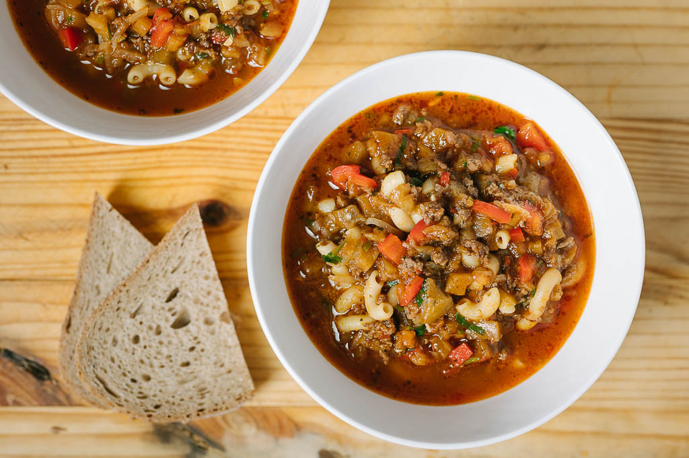

Eggplant Soup Recipe

Eggplant soup is a warm and flavorful dish made with soft eggplant, vegetables,
meat, and spices. It has a rich tomato-based broth and is a comforting meal that is simple and filling.
Ingredients
- Eggplants
- Ground beef (or chicken/turkey)
- Onoin
- Bell pepper
- Crushed tomatoes
- Garlic
- Water or stock
- Olive oil
- Salt
- Black pepper
- Cumin
- Smoked paprika
- Dried mint
- Cooked pasta (optionalFlour)
Cooking steps
- Chop the onion, garlic, eggplants, and bell pepper.
- Heat oil in a pot over medium heat.
- Cook onions until soft.
- Add garlic, meat, and bell pepper. Cook for a few minutes.
- Add eggplant and tomatoes.
- Pour in water or stock.
- Add salt, pepper, cumin, and paprika.
- Simmer until vegetables become soft.
- Add cooked pasta if desired.
- Sprinkle mint on top and serve hot.
Home